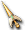

波特赫德
波特赫德
我們伺服器實際的怪物設定（不是日版 wiki 的資料）。
能力值
| 等級 | 90 |
| HP | 7350～7365 |
| AC | 25 |
| MC | 50 |
| 經驗值 | 108 |
| 金錢 | 180～180 |
出現地圖
| 地圖 | 數量 | 出現位置 |
| 魔窟29 | 12～15 | 整張地圖 |
掉落道具
| 道具 | 基本機率 |
 波特頭盔 波特頭盔 | 5% |
 生命之水 生命之水 | 0.02% |
| b | 3% |
 高地劍卡 高地劍卡 | 0.05% |
 迪羅佐阿修羅鎧甲 迪羅佐阿修羅鎧甲 | 0.1% |
 迪羅佐阿修蕾德鎧甲 迪羅佐阿修蕾德鎧甲 | 0.1% |
| 刺渭波特帽 | 5% |
 老鼠帽子 老鼠帽子 | 0.05% |
 弓手手套 弓手手套 | 0.05% |
 重型長靴 重型長靴 | 0.05% |
 雙手戰斧 雙手戰斧 | 0.05% |
 天上界4次惡屬性男變身捲軸 天上界4次惡屬性男變身捲軸 | 0.1% |
 黃金后冠 黃金后冠 | 0.05% |
 紫色后冠 紫色后冠 | 0.05% |
| 紫色后冠(綠) | 0.05% |
| 紫色后冠(藍) | 0.05% |
 斯坎達倫之緊身衣 斯坎達倫之緊身衣 | 0.05% |
 生鏽的斯坎達倫之外袍 生鏽的斯坎達倫之外袍 | 0.05% |
| 不穩定的斯坎達倫之外袍 | 0.05% |
 生鏽的斯坎達倫之守護甲 生鏽的斯坎達倫之守護甲 | 0.05% |
 生鏽的斯坎達倫之女法衣 生鏽的斯坎達倫之女法衣 | 0.05% |
 生鏽的斯坎達倫之護膝 生鏽的斯坎達倫之護膝 | 0.05% |
 生鏽的斯坎達倫之項鍊 生鏽的斯坎達倫之項鍊 | 0.05% |
 不穩定的斯坎達倫之珠(雙手) 不穩定的斯坎達倫之珠(雙手) | 0.05% |
 單手斯坎達倫之法杖 單手斯坎達倫之法杖 | 0.05% |
 不穩定的斯坎達倫之劍 不穩定的斯坎達倫之劍 | 0.05% |
 不穩定的斯坎達倫之劍卡 不穩定的斯坎達倫之劍卡 | 0.05% |
| 活動用耳環2 | 0.05% |
 冰凍頭飾-貳式 冰凍頭飾-貳式 | 0.05% |
 生鏽的帕爾塞斯之緊身衣 生鏽的帕爾塞斯之緊身衣 | 0.05% |
 生鏽的帕爾塞斯之聖袍 生鏽的帕爾塞斯之聖袍 | 0.05% |
 帕爾塞斯之外袍 帕爾塞斯之外袍 | 0.05% |
 克修倫之守護甲 克修倫之守護甲 | 0.05% |
 不穩定的帕爾塞斯之法札德 不穩定的帕爾塞斯之法札德 | 0.05% |
 帕爾塞斯之女板甲 帕爾塞斯之女板甲 | 0.05% |
| 生鏽的帕爾塞斯之女板甲 | 0.05% |
 帕爾塞斯之女緊身衣 帕爾塞斯之女緊身衣 | 0.05% |
 不穩定的帕爾塞斯之女法衣 不穩定的帕爾塞斯之女法衣 | 0.05% |
 不穩定的帕爾塞斯之女守護甲 不穩定的帕爾塞斯之女守護甲 | 0.05% |
 不穩定的帕爾塞斯之拉皮內斯 不穩定的帕爾塞斯之拉皮內斯 | 0.05% |
 生鏽的帕爾塞斯之腰帶 生鏽的帕爾塞斯之腰帶 | 0.05% |
 仿冒天使 仿冒天使 | 0.05% |
 不穩定的帕爾塞斯之女戰盔 不穩定的帕爾塞斯之女戰盔 | 0.05% |
 生鏽的帕爾塞斯之豎琴(雙手) 生鏽的帕爾塞斯之豎琴(雙手) | 0.05% |
 單手克修倫之豎琴 單手克修倫之豎琴 | 0.05% |
 生鏽的帕爾塞斯之槍(單手) | 0.05% |
 生鏽的帕爾塞斯之魔法卡組 生鏽的帕爾塞斯之魔法卡組 | 0.05% |
 生鏽的帕爾塞斯之珠(雙手) 生鏽的帕爾塞斯之珠(雙手) | 0.05% |
 生鏽的帕爾塞斯之劍卡 生鏽的帕爾塞斯之劍卡 | 0.05% |
 重型堅不可摧鐵手套 重型堅不可摧鐵手套 | 0.05% |
 單手瘋狂吉他 單手瘋狂吉他 | 0.05% |
| 單手艾拉爾豎琴 | 0.05% |
 幻影復仇者長靴[Lv3] 幻影復仇者長靴[Lv3] | 0.05% |
 幻影復仇者護腕[Lv3] 幻影復仇者護腕[Lv3] | 0.05% |
 幻影復仇者鐵手套[Lv3] 幻影復仇者鐵手套[Lv3] | 0.05% |
| 十字鎬 | 0.05% |
 貝絲特拉之戒 貝絲特拉之戒 | 0.05% |
 幻影專家之戒 幻影專家之戒 | 0.05% |
 單手音速吉他 單手音速吉他 | 0.05% |
| [商店用]克洛克迪卡普馬 | 0.1% |
| [商店用]幻影卡組 | 0.1% |
| [商店用]風疾步伐 | 0.1% |
| [商店用]蝸牛術 | 0.1% |
基本機率再乘上伺服器的掉寶倍率；「隨機一件」是從一組道具裡抽一件。